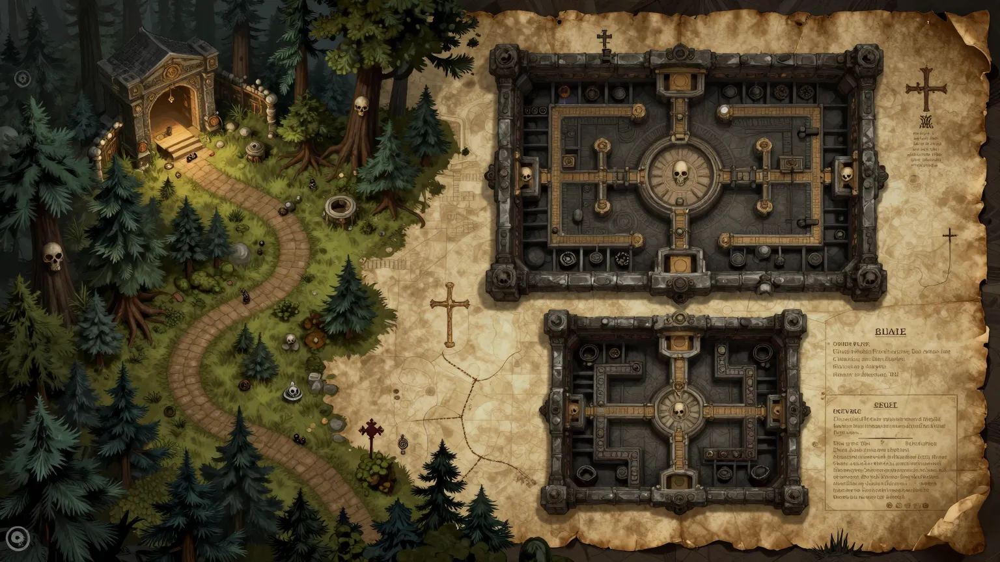
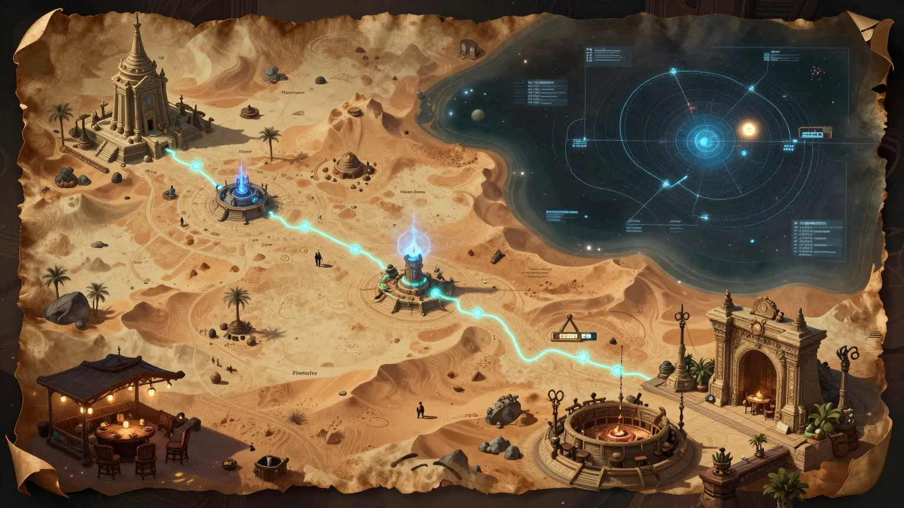
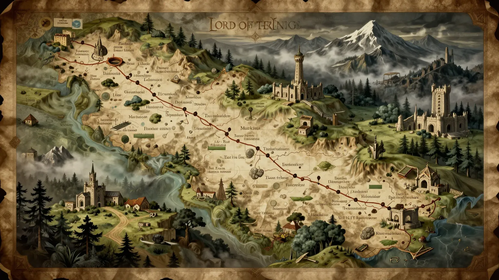
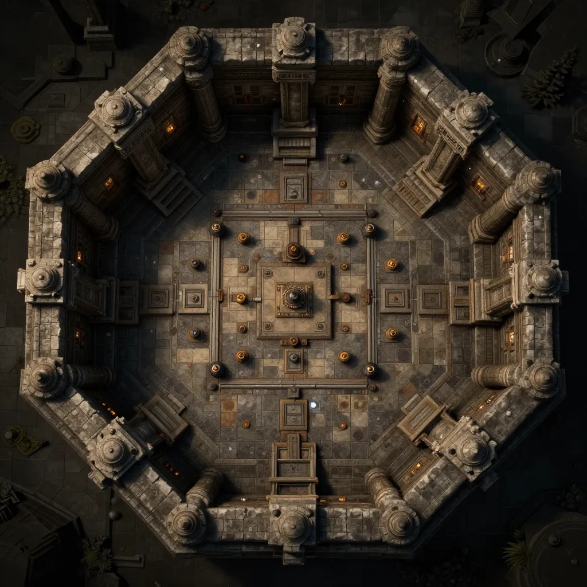
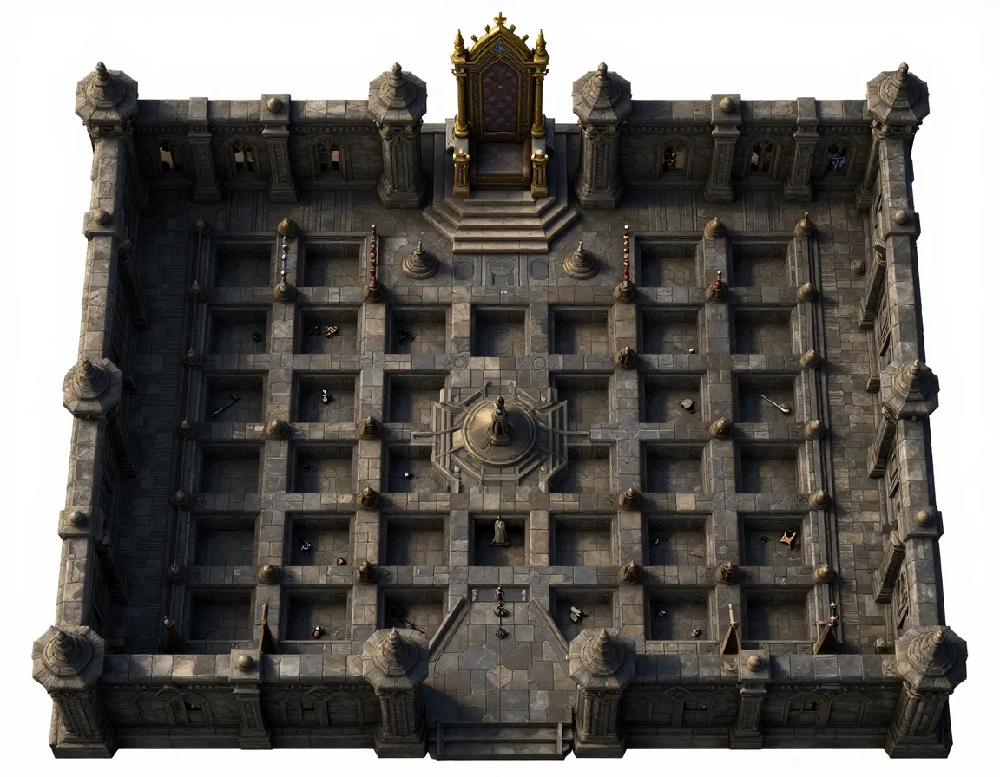

Mapa de jornada desde a taverna até à cripta real assombrada
Ficheiro: cripta-reis-esquecidos.webp (196KB)
Mapa sci-fi fantasy desde o porto estelar até ao templo místico
Ficheiro: sombras-imperio-estelar.webp (169KB)
Mapa épico inspirado em Lord of the Rings, jornada através da Terra-Média
Ficheiro: irmandade-anel-sombrio.webp (222KB)
Câmara octogonal com 4 esqueletos guardiões | Grid: 12x12
Ficheiro: cripta-step6-camara-guardioes.webp (125KB)
Sala do trono gótica com Cavaleiro Fantasma | Grid: 14x11 (estimado)
Ficheiro: cripta-step10-sala-trono.webp (115KB)
QUEST_MAPS_GUIDE.md para detalhes sobre geração dos mapas restantes.
test_maps.html diretamente no browserpython run.py e navegar para as quests
Mapas gerados usando Z-Image-Turbo via Hugging Face MCP Server
Total: 5 mapas | ~600KB | WebP format